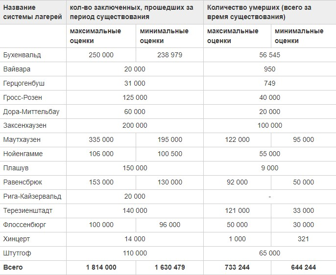

Смертность в ГУЛаге
Смертность в сталинских лагерях превышала смертность в фашистских концлагерях.
«А вы знаете, что в 30-е годы смертность в ГУЛаге была выше, чем у фашистов?»; «Фашисты учились зверству у большевиков»; «Сталин в большей степени уничтожал свой народ, чем Гитлер - чужие»; «В мирный период 1933-1939г. смертность в нацистских лагерях была в ДЕСЯТКИ раз ниже, чем в советских».
К очень большому сожалению, действительно, в некоторых(!) лагерях системы ГУЛага в некоторые(!!!) годы смертность приближалась или даже превышала данный показатель в опять-таки некоторых фашистских лагерях. (сразу оговорюсь: если верить некоторым исследователям фашистских лагерей).
Сторонники этого мифа приводят много статистических данных, показывающих, что в таком-то лагере ГУЛага в таком-то году умерло больше, чем в Бухенвальде или Дахау. Притом приводятся абсолютные цифры (пример: в Дахау умерло в 1939 году 1235 человек, в Севвостлаге - 13475.) Сразу для всех хочу сделать методологическое замечание: смертность считается только в ОТНОСИТЕЛЬНЫХ цифрах! (т.е. в процентах). Абсолютные цифры нам ничего не дают! И как только мы начинаем спрашивать с наших противников относительные цифры, то получается гораздо интереснее: «в Бухенвальде в 1937г- умерло 48 человек(4%) среднегодовой численности, в 1937 году в СевВостлаге умерло 2443 человек(9%)»1). Как видите, картина меняется. Особенно, если сравнить смертность по всему ГУЛагу в 1937 году(2,42%2)), то получится, что она была почти в 2 раза ниже, чем в Бухенвальде! Так изобличается ложь.
Теперь перейдём к основному вопросу: как же выяснить, какая система была «более смертельной»? Какие показатели брать, как их высчитывать? Представляется верным следующее решение: надо взять общее количество людей, прошедших через эту систему, и количество всех умерших. Потом высчитать, какую же долю от количества всех прошедших составляет количество умерших. Так мы получим общую смертность каждой из сопоставляемых систем.
Но на этом пути нас подстерегают первые сложности. Если в сталинском ГУЛаге велось строгое делопроизводство, которое сохранилось в полном объёме и теперь находится в фонде 9414 Государственного архива Российской Федерации, то в фашистских лагерях документация или уничтожалась3) или даже не велась вовсе (Как в Освенциме4)). Многие лагеря были фашистами разрушены, от них не осталось никаких следов, кроме воспоминаний заключённых (чему свидетелем является сам автор статьи: мой дедушка в 1942 году попал в фашистский лагерь, вскоре бежал. Когда после войны он был на месте лагеря, то никаких следов его существования не обнаружил). Правительство Германии в 1967 году признало 1634 нацистских лагеря, хотя многие исследователи говорят, что их было гораздо больше (кстати, правительство Германии и моего дедушку до сих пор не признаёт узником, равно как и существование его лагеря). Так что перед исследователем встаёт вопрос: как определить общее количество заключённых в фашистских концлагерях и количество умерших из них. Дело осложняется тем, что у нацистов было 3 типа лагерей: транзитные лагеря, трудовые лагеря, лагеря смерти. Понятно, что сопоставлять надо идентичные учреждения. Именно поэтому мы, справедливости и объективности ради, должны отбросить лагеря смерти у фашистов (равно как и транзитные), оставив только т.н. трудовые, и именно этот тип лагерей сравнить с советскими ИТЛ (исправительно-трудовые лагеря) (тем более и названия у них почти идентичны). Остаётся вопрос: какие же конкретно нацистские концлагеря брать? Исследователь поступил следующим образом: взят отчет 1967 года Федерального министерства внутренних дел Германии5), оттуда выбраны крупные системы лагерей (столбик справа). Таковых оказалось 29. Далее список МВД Германии сличен со списком, представленным в Википедии6). Из обоих списков выбраны только те системы, которые совпадают. Таких осталось 22. Из этого числа мы убрали те, которые в Википедии обозначены, как лагеря смерти (какими данными руководствовались составители ресурса, лично для меня остаётся непонятным. К примеру, Дахау, в котором из 200 000 прошедших через него, погиб 31 591 человек, обозначен, как лагерь смерти, а Заксенхаузен, в котором из тех же 200 000 погибло 100 000, обозначен, как трудовой. Но мы этот вопрос оставим на совести авторов Вики. Если у кого есть иные данные, то буду рад ознакомиться). После отсева лагерей смерти у нас осталось 16 систем лагерей. Далее мы брали по каждому из этих лагерей максимальную и минимальную оценки численности прошедших через них, и такие же показатели (максимальный и минимальный) умерших. Вот что у нас получилось:
Таблица. Оценка общего количества прошедших через нацистские трудовые лагеря, признанные правительством ФРГ, и количества умерших из низ по данным Википедии.
Теперь, опираясь на данные приведённой выше таблицы, попытаемся вычислить общую смертность в нацистских трудовых лагерях за всё время их существования. Мы получим максимальный процент смертности, если возьмём минимальное число прошедших через лагеря и максимальную оценку числа погибших. Этот процент составит 44,97% (733244/1630479*100%). Если возьмём минимальную оценку погибших и максимальное число прошедших, то процент составит 35,52% (644244/1814000*100). Если брать максимальные и минимальные показатели соответственно, то проценты получатся равными 40% (40,42% по максимальным показателям и 39,52% по минимальным). Это совпадает с данными британского исследователя Р. Овери.
Общее количество прошедших через «сталинские» лагеря оценивается в 9,5 млн. человек). Общее количество умерших с 1930 по 1953 годы составляет 1590378 человек, или 16,74%). Согласно И.Пыхалову, с 1931 по 1947 и с 1949 по 1952 годы умерло 1111448 человек в лагерях ГУЛага, с 1939 по 1951 гг. 93376 человек в тюрьмах и с 1949 по 1952 гг. 39073 человек в колониях.) Т.о., у Пыхалова есть данные о 1243897 человек, умерших в пенитенциарной системе СССР при Сталине, что составляет 13,09%. Учитывая, что данные Пыхалова неполные, то они нисколько не противоречат данным, приведённым в Википедии. Самым крупным и авторитетным исследователем сталинских репрессий является Виктор Николаевич Земсков. Согласно ему, в ИТЛ ГУЛага с 1934 по 1947 гг. погибло 937471 человек. Как видим, данные по ГУЛагу непротиворечивы, и позволяют заключить нам, что за 1930 по 1953 годы в ИТЛ, ИТК, тюрьмах умерло 16,74% заключённых. Это также близко к данным Р.Овери. Из этого следует, что ГУЛаг не был системой уничтожения народа, системой геноцида.
Таким образом, опираясь на архивные данные и объективные научные исследования, мы можем сделать следующий главный вывод: смертность в фашистских «трудовых» лагерях превышала смертность в ГУЛаге более, чем в 2 раза!
Что касается смертности во всех фашистских трудовых лагерях, упомянутых в Википедии и не признанных МВД ФРГ, то она составляла 36%. Если же подсчитать смертность не только в трудовых, но и в лагерях смерти, то этот процент вырастает до 70%!!!
Отсюда главный вывод: при всей жестокости обоих систем, сталинская система несопоставима с гитлеровской. Эти системы имеют совершенно разную природу!